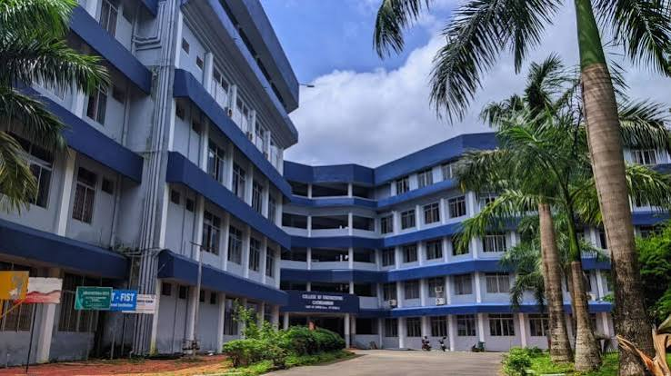

The College of Engineering Chengannur (CEC), was established by the Government of Kerala under the aegis of the IHRD, in the year 1993. It has been approved by All India Council for Technical Education (AICTE) and affiliated to APJ Abdul Kalam Technological University (KTU). Ever since its inception, the college has maintained its eminence as a leading engineering college in Kerala. Being located in Chengannur town, Alleppey district the college has got access to all means of transport, communication and lodging facilities.
B.Tech Computer Science and Engineering(cse), Electronics & Communication, Electrical & Electronics and CSE(Artifical Intelligence & Machine Learning), alongside Postgraduation M.Tech programs and MCA.
The Admission process is strictly merit based, Undergraduate B.Tech admissions are conducted through the centralized Allotment process(CAP) based on the Kerala Engineering Archeticture Medical(KEAM)
| Cources | Specifications | Seats |
|---|---|---|
| B.Tech | Computer Science and Engineering(cse), Electronics & Communication, Electrical & Electronics and CSE(Artifical Intelligence & Machine Learning) | 60 |
| M.Tech | Computer Science and Engineering(cse), Electronics & Communication, Electrical & Electronics and CSE(Artifical Intelligence & Machine Learning) | 30 |
| MCA | Data Structure, Web Program | 60 |
Adress: College of Engineering ,Chengannur Alapuzha
Contact Number: +01-479-2466125